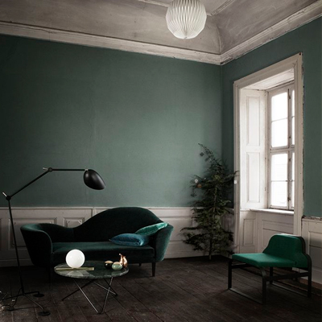
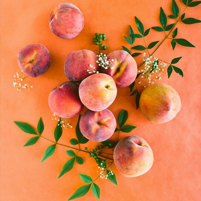

A jQuery plugin that takes the dominant colour of your photos and applies that to the background colour of your overlay.
Scroll down below the demo to view the documentation.
1. Link "jquery.colourOverlay.js" and "colouroverlay.css" to your HTML file
2. Create a <div> with a <div class="overlay"> and a <img> inside.
<div class="photoDiv"> <img src="images/photoName.jpg" alt=""> <div class="overlay"></div> </div>
3. In your main javascript file, add the following code to call the function, remembering to change the class to whatever you've named your div:
$(function() {
$('.photos').colourMe();
});